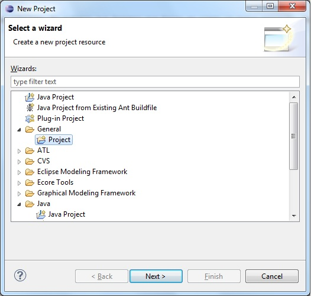
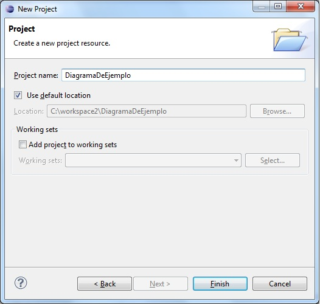
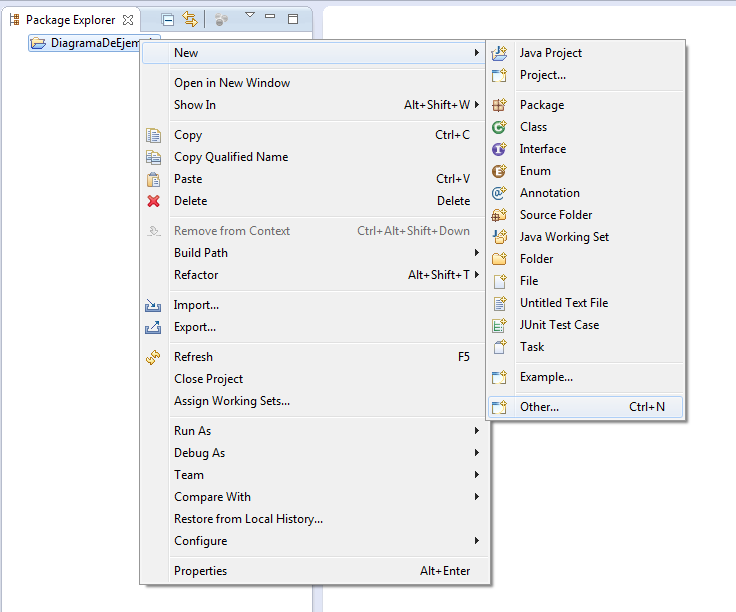
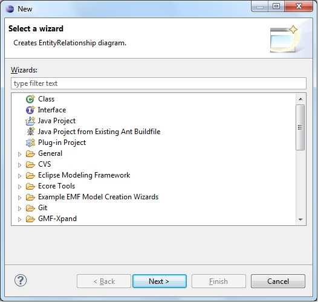
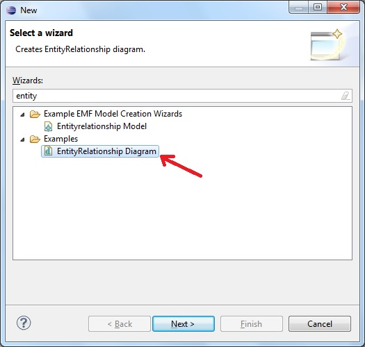
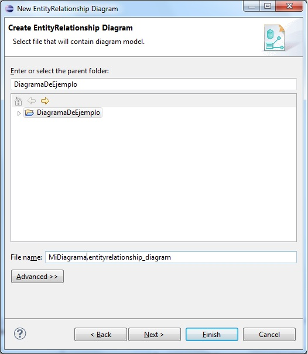
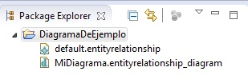
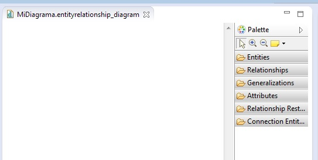

Para crear un nuevo diagrama de entitdad relación, lo primero que tenemos que hacer es crear un nuevo proyecto. Para ello hacemos click en el menú File -> New Project. Nos aparecerá una ventana como la siquiente

Hacemos click en la carpeta General y seleccionamos Project. Hacemos click en Next y nos aparecerá una ventana como la que sigue.

En Project Name damos un nombre como se ve en la imagen DiagramaDeEjemplo y hacemos click en Finish. En el margen izquierdo de Eclipse, dentro de la pestaña Package Explorer se podrá ver el nuevo proyecto que hemos creado. A continuación lo que haremos será crear un nuevo diagrama entidad-relación. Para ello haremos lo siguiente:
En la pestaña de Package Explorer hacemos click derecho sobre el proyecto DiagramaDeEjemplo y a continuación New -> Other tal y como aparece en la imagen

Hecho el paso anterior debería aparecernos una ventana como la siguiente

En la caja de texto debajo de Wizards que se lee type filter text escribimos entity y se nos filtrarán los tipos de archivos existentes. Hacemos click en EntityRelationship Diagram que se encuentra dentro de la carpeta Examples. Deberíamos ver la siguiente ventana:

Hacemos click en Next. Nos aparecerá una ventana como la siguiente:

En la caja de texto que se encuentra junto a la etiqueta File name: escribimos MiDiagrama.entityrelationship_diagram y hacemos click en Finish.
Hecho esto, en el visor Package Explorer, dentro de la carpeta tenemos que ver 2 archivos uno con el nombre de default.entityrelationship y otro con el nombre de MiDiagrama.entityrelationship_diagram que representan respectivamente al modelo y al diagrama entidad-relación que estamos creando. Nos aparecerá una ventana como la siguiente.

Si todos los pasos han sido realizados de forma correcta, en la parte central de eclipse, nos debería aparecer una ventana como la siguiente:
